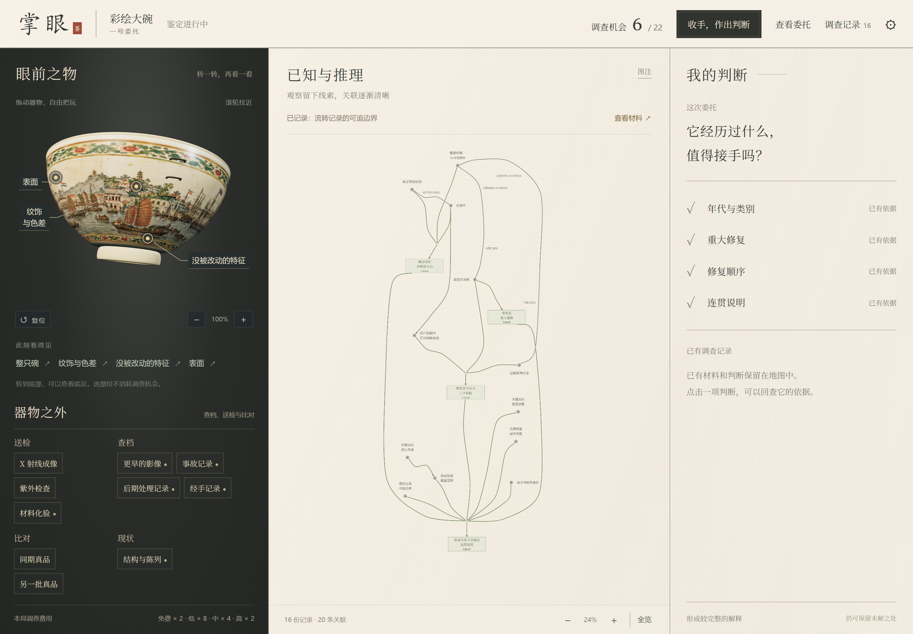

掌眼 / V3 / 2026.09.12
从观察一只碗，到形成自己的判断
一件虚构外销瓷大碗的鉴定工作台。旋转器物，选择调查，沿着逐渐接通的知识地图回查依据，再决定是否带着剩余未知收手。
先自由走一小段
- 拖动器物旋转，朝向你的部位会显示调查入口。
- 点入口查看方法。查看免费，执行“做这一步”才占一次调查机会。
- 看新材料飞入地图，等镜头拉回，观察道路接通了哪里。
- 点信息、道路或右侧判断，回看它的依据；是否继续调查由你决定。
要快速检查本轮修订，可在“表面”先做试窗，再做区域综合。完整示范路线包含结论，放在单独的说明文件中。
这一版的范围
- 可以操作：器物把玩、22 个调查手段、材料与关系回查、四项判断、历史、手动收手。
- 当前规则：区域综合先取得试窗记录；相同调查完成后可以免费回看。
- 后续设计：估值、挂牌、市场结算及完整判断质量反馈尚未接入。来客保留为历史与未来愿景。
这是可运行的阶段原型。机器检查已记录，最终玩家体验待复测，正式数值尚未验收。
展示与过程
看一段调查如何接通地图
查看四项判断成立后的画面（含结论）
